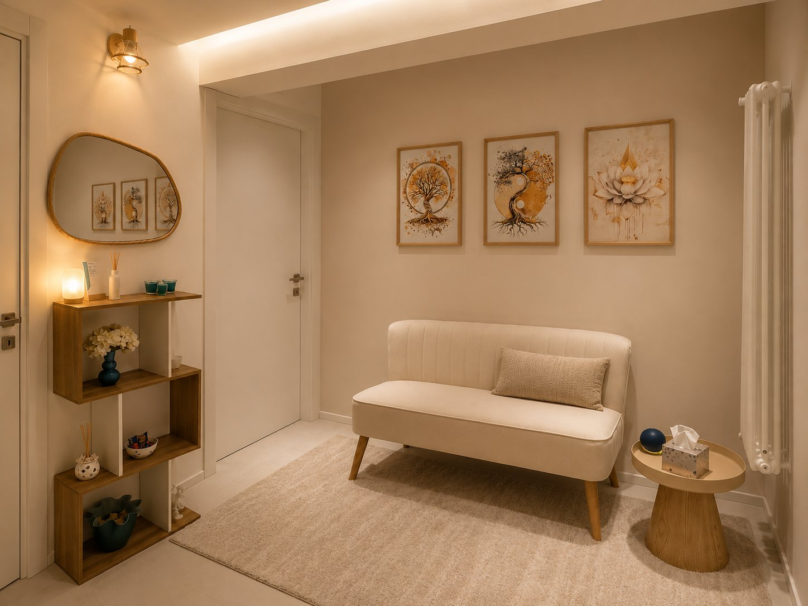

Lo studio
Ricevo a Pregnana Milanese, in uno spazio pensato per offrire riservatezza, tranquillità e accoglienza.



Un luogo sicuro
Uno spazio pensato per te
Lo studio è facilmente raggiungibile da Cornaredo, Settimo Milanese, Vighignolo, Rho, Bareggio, Vanzago e Arluno ed è pensato come un luogo in cui la persona possa sentirsi al sicuro, libera di portare sé stessa e la propria storia.
- IndirizzoVia Cornaredo 17, 20006 Pregnana Milanese (MI)
- OrariDal lunedì al venerdì, dalle 9 alle 18, anche in pausa pranzo, su appuntamento
- ModalitàColloqui in presenza e online, in videochiamata
- AccessoLo studio si trova al piano terra. Per entrare si scendono tre gradini, ma è disponibile anche un accesso senza gradini.
Come arrivare
Raggiungere lo studio
In auto
Lo studio è in via Cornaredo, a soli 4 minuti da Cornaredo, e a pochi minuti da Settimo Milanese, Vighignolo, Rho, Bareggio, Vanzago e Arluno. Puoi parcheggiare davanti allo studio e sul lato dell'edificio.
In autobus
La fermata dell'autobus è proprio davanti allo studio.
Dai comuni vicini
- Cornaredo
- Settimo Milanese
- Vighignolo
- Rho
- Bareggio
- Vanzago
- Arluno
Primo colloquio
Prendersi uno spazio per sé può essere il primo passo
Se senti il bisogno di un luogo in cui fermarti, comprenderti e affrontare con maggiore chiarezza ciò che stai vivendo, puoi contattarmi per un primo colloquio.
Preferisci parlarne prima? Chiamami o scrivimi al +39 347 051 5781: rispondo personalmente.